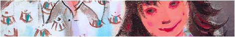
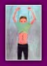
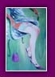
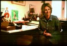
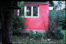
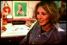
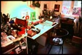

|
|
Ik
ben in 1970 in Amsterdam geboren. Al heel jong was ik altijd
met mijn doos met kleurpotloden in de weer, voordat ik
op 6-jarige leeftijd met tekenlessen begon.
Tijdens mijn hogere kunstnijverheidsopleiding in Rotterdam, begon
ik als freelance met het maken van persillustraties in stedelijke
dagbladen en underground tijdschriften. Af en toe schrijf ik en
gedreven door een onverzadigbare nieuwsgierigheid naar alle kunstvormen
houd ik me eveneens bezig met graveren en schilderen.
Voor
uitgebreidere informatie volgt hier het interview dat op
22 mei 1999 werd afgenomen door het kunstmagazine ARTBook.
------
Wilt u zich voorstellen?
Mijn naam is Karen Gijman, ik woon vanaf mijn prilste jeugd in
Amsterdam en ik werk als illustratrice, voornamelijk voor de pers.
------
Op
welke leeftijd wist u dat u dit beroep wilde gaan uitoefenen?
Toen ik 6 jaar was, wist ik al dat ik tekenares wilde worden. Het
was echt een roeping.
------
Heeft
u een speciale opleiding gevolgd?
Ik heb kunstgeschiedenis gestudeerd aan de Erasmus Universiteit
in Rotterdam, om een goede culturele achtergrond te hebben. Wat
de eigenlijke kunst van het illustreren betreft, ben ik autodidact.
------
Welke
personen of persoonlijkheden hebben u gemotiveerd om illustraties
te gaan maken?
Ik heb nooit helden of modellen gehad. Ook nu heb ik die niet echt.
Als anekdote kan ik een anonieme schilder noemen die ik op 8-jarige
leeftijd heb ontmoet toen ik met mijn moeder aan het kamperen was.
Dagenlang was hij bezig zijn vriendin te schilderen in olieverf.
Ik herinner me dat ik zeer onder de indruk was van zijn werk en
van alle penselen en gereedschappen die hij had. Later heb ik de
openbaring gehad toen ik een boek over Degas ontdekte. Vanaf dat
ogenblik begon ik hevig geïnteresseerd te raken in het leven van
schilders.
------
Wat
zijn uw artistieke referenties op illustratiegebied?
Ik heb geen referenties in de eigenlijke zin van het woord, maar
er zijn kunstenaars van wie ik vooral houd als persoon zoals Jan
Sanders, Johan van Dam of illustrators voor de jeugd zoals Henriette
Willebeek Le Mair.
------
Wordt
u beïnvloed door kunstvormen die losstaan van illustratie
en spelen deze een belangrijke rol in uw inspiratie?
De film is een tamelijk sterke visuele bron, evenals de moderne
kunst natuurlijk. Toch is dat niet de voornaamste bron waaruit
ik mijn inspiratie put voor mijn tekeningen, dat is eerder de lectuur,
de moderne roman waarvan de woorden beelden oproepen. Ook mijn
vele reizen hebben mijn geest geopend voor zeer uiteenlopende vormen
van kunst.
------
Welk
element inspireert u als eerste?
Het lezen van de tekst die ik moet illustreren roept onmiddellijk
een beeld op.
Ik maak een soort snelle en geconcentreerde samenvatting.

Voor
welke media zijn uw tekeningen bestemd?
Voornamelijk voor modemagazines, maar ook voor nieuwsbladen en
culturele tijdschriften, evenals voor de uitgeverij en kinderboeken.
Zo heb ik onlangs een serie tekeningen gemaakt voor het magazine
Cultuur.
------
Wat
houdt het beroep van persillustrator in?
Ik werk aan de hand van teksten die me door de uitgevers worden
aangeleverd. Ik begeleid de schrijvers bij wat ze zeggen. Illustratie
is gebaseerd op een wisselwerking tussen tekst en tekeningen. Je
moet het geschreven woord goed begrijpen en er tegelijkertijd iets
aan toevoegen, dat van de tekst kan afwijken of waardoor de inhoud
van de tekst samengevat kan worden. Ook de relatie tot de titel
is heel belangrijk, want dat is wat je het eerste ziet samen met
de illustratie. Je kunt ook inspelen op het bijschrift van de illustratie.
------
Bent
u voornemens voor andere media te werken zoals tekenstrips
of kinderboeken?
Nee, niet voor tekenstrips... Daar dient de tekening niet meer
ter illustratie van een verhaal, maar moet zelf het verhaal vertellen,
dat is een heel ander vak. Daarentegen zijn kinderboeken een gebied
waarop ik al gewerkt heb en dat ik erg leuk vind. Het is een schitterend
medium, en erg ruim.
------
Hoe
zou u de kunst van het illustreren in enkele worden kunnen
samenvatten?
Je moet een fijn inzicht hebben in een tekst en er tegelijkertijd
in slagen de eigen wereld van de illustrator over te brengen. Het
is een kwestie van spanning en van een parallel tussen het geschrevene
en het getekende.
------
Houdt
het verband met een specifieke stroming?
Er is niet echt een artistieke stroming in de illustratie. Mijn
tekeningen worden vooral gekenmerkt door hun naïviteit en de luchtige
lijnen.
------
Maakt
u meerdere schetsen vóór de uiteindelijke tekening?
Nee, ik maak weinig schetsen. Van de eerste tekening die me voor
de geest komt, kan ik vooral de gelaatsuitdrukkingen en de omkadering
wijzigen, maar ik maak zelden veel proeven.
------
Welke technieken gebruikt u om een illustratie
te maken?
Er zijn twee technieken: de houtgravure waarmee sterke, samenvattende,
zwart-wit tekeningen gemaakt kunnen worden, en olieverf, die het
mogelijk maakt met kleur te werken.
------
Heeft u voorkeursthema's?
De personages, hun gestalte, de gelaatsuitdrukkingen, de situaties
en enkele landschappen.
------
En
wat zijn de thema's die u absoluut niet zou kunnen
illustreren?
Ik zou niet willen meewerken aan iets vulgairs of iets dat me uit
ethisch oogpunt zou storen.
------
Elk
van uw tekeningen is een uniek werkstuk, maar welke
van de tekeningen die u gemaakt hebt heeft uw voorkeur?
«Het meisje met de hoepel», want ik houd erg veel van de met verve
gebrachte, luchtige benadering.
------
Wat
is voor u de band tussen al uw tekeningen?
De humor!
------
Aan
welk project werkt u momenteel?
Ik heb onlangs een serie gravures voltooid voor een modemagazine
en ik werk nu aan de illustratie van een detectiveverhaal voor
tieners.
|
| |
 |
 |
|
 |
|
 |
|
Sanne,
2001
|
Australia,
2001
|
Amy,
2001
|
|
Tim
and Lisa, 2000 |
 |
|
 |
 |
|
 |
 |
| Zonder
titel,
2001 |
Fashion,
2002
|
Cat
and Dog,
2002 |
Dream,
2002
|
Women,
2001
|
|
| |
 |
 |
|
 |
|
|
Zonder
titel,
2002
|
|
Zonder
titel,
2002 |
Elisabeth,
2002 |
|
|
|
|
De
Amsterdammer - 25 september 1998
Tentoonstelling
in Galerie Van der Lamers - Amsterdam
Karen Gijman woont sinds haar prilste jeugd in Amsterdam. Hoewel
zij is opgegroeid in een traditioneel milieu, is zij de kunstenares
van de familie, wat zij nu bewijst door te exposeren temidden van
de talentvolste mode- en reclametekenaars. Ze heeft een duidelijk
herkenbare stijl: een melodie van sprankelende kleuren, realistische
uitdrukkingen vermengd met een ondeugende naïviteit. Potloodtekeningen
of olieverf, haar tekeningen zijn zo luchtig als een sluier en
zullen de toeschouwer niet onverschillig laten. Aanbevolen...
---------
Cultuur
- 06 november 1999
«Ontmoeting
tussen Muller en Gijman»
Het nieuwe kinderverhaal van de hand van de goddelijke Iva van
Muller heeft een talentvolle illustratrice gevonden wier tekeningen
in perfecte osmose zijn met de droomwereld van de schrijfster.
Karen
Gijman nodigt ons uit voor een reis door een kleurige wereld
met onvolmaakte lijnen. Hier lopen de beelden niet op de
woorden vooruit, maar zij begeleiden ze op een heerlijk
vloeiende manier. De lijnen voeren ons mee in een wereld
die realisme combineert met het niet-bestaande en met oprechtheid.
De
illustratie van Karen Gijman is niet slechts tekening,
het is een ware poëzie.
---------
Grafik-art
- 20 april 2001
«Karen
Gijman, de hartstocht voor illustratie»
Voor Karen is tekenen een passie. De kleuren harmoniëren, de schildering
komt tot leven, ze werkt snel, gedreven door de inspiratie, door
een detail aan te grijpen. Bij haar lijkt de illustratie gemakkelijk
te benaderen en onthutsend eenvoudig.
Haar kasten puilen uit met tekeningen en met een indrukwekkende
hoeveelheid penselen en halflege tubes. De kleur is koning, brengt
de lijnen tot leven en doordringt de scènes uit het dagelijks leven
met een groot gevoel van warmte: hier kleedt een vrouw zich aan,
daar slingeren een paar sloffen… Karen geeft een andere dimensie
aan de details, een tijdloos decor laat panty's, kleren of een
leeftijdloos personage goed uitkomen.
Karen wordt duidelijk bezield door de liefde voor het detail, terwijl
zij rustig gezeten in haar serre temidden van planten en cactussen
voor de zoveelste keer een ijzeren gieter tekent. De magie werkt
en op het papier komt een vuurwerk van groene, rode en oranje kleuren
tot uitbarsting. Deze plastische bespiegeling van het stilleven
heeft haar ertoe gedreven duizenden voorwerpen in evenzoveel omgevingen
te plaatsen: "Ik vind geen enkel voorwerp banaal, ik houd ervan
ze tot leven te wekken, ze een nieuwe dimensie te geven, ze in
scène te zetten of ze op een esthetischer manier te zien." De
fantasierijke, bijna kinderlijke, geest van Karen, vergroot al
die kleine dagelijkse dingen en brengt op die manier hulde aan
het dagelijkse.
|
| |
|
|
| |
 |
 |
 |
 |
 |
 |
|
|
Samengebracht
onder de noemer favorieten volgen hier een
aantal werken die me geraakt hebben en enkele
plaatsen die ertoe hebben bijgedragen de kunstenaar
in mij te doen groeien.
Mijn
buurt: de
grachten
Ik
woon in een
leuk huis in
neoklassieke
stijl in de
Beethovenstraat,
in het hart
van dit vloeibare
doolhof dat
Amsterdam zijn
charme en zijn
karakter geeft.
Enkele bruggen
verder is mijn
toevluchtsoord, café Schiller,
waar de zachte
fluwelen fauteuils
altijd klaar
staan om me
te verwelkomen
voor een cappuccino
of voor een
praatje met
Gaby, de zaakvoerder.
---------
Mijn
museum: het
Stedelijk Museum -
13 Paulus Potterstraat - Amsterdam
De
stad Amsterdam
heeft een indrukkend
aantal kunstgalerijen
en musea waarvan
het stedelijk
museum alles
samenbrengt
dat het belangrijkste
is op het gebied
van moderne
kunst. De collectie
die onophoudelijk
vernieuwd wordt
en waar Manet,
Cézanne, Kandinsky,
Dubuffet en
de Engelse
Pop Art naast
elkaar hangen,
heeft sinds
mijn prilste
jeugd mijn
artistieke
blik weten
te verruimen.
---------
Mijn
bedliteratuur: De
alchimist - Paulo
Coelho - 1994
«Een
zoektocht
begint altijd
met het Geluk
van de Beginner
en eindigt
altijd met
de Beproeving
van de Overwinnaar.»
De
roman van
Coelho, een
buitengewoon
optimistische,
filosofische
fabel, is
een uitnodiging
tot avontuur.
Het verhaal
vertelt de
inwijdingsreis
van een jong
Andalusische
herder die
op zoek is
naar een
droomschat.
Zijn omzwervingen
leiden hem
naar een
alchimist
die hem de
Kennis zal
onthullen,
die van de
zin van het
leven. Aanbevolen
aan iedereen
die diep
van binnen
de zin voor
avontuur
behoudt en
die net als
ik zijn eigen
legende wil
verwezenlijken.
---------
Mijn
lievelingsfilm: Trainspotting -
Danny Boyle - 1996
Inleiding
«Choose
life. choose
a job. Choose
a career. choose
a family. Choose
a fucking big
television,
choose washing
machines, cars,
compact disk
players and
electrical
tin openers.
Choose good
health, low
cholesterol
and dental
insurance.
Choose fixed-interest
mortgage repayments.
Choose a starter
home. choose
your friends.
Choose DIY
and wondering
who the fuck
u are on sunday
morning. Choose
sitting on
the coach watching
mind numbing,
spirit-crushing
game shows,
stuffing junk
food into your
mouth. Choose
rotting away
at the end
of it all,
pishing your
last in amiserable
home nothing
more than an
embarassement
to the selfish,
fucked-up brats
you spawned
to replace
yourself. Choose
your futur.
Choose life.
But why would
I want to do
a thing like
that ? I chose
not to choose
life : I chose
something else.
And the reasons
? There are
no reasons.
Who needs reasons
when you've
got heroin
?»
Non-conformistisch,
rauw en zinsbegoochelend, de film van Dany
Boyle is een reactie op de conservatieve, uniforme
en banale maatschappij via het verdorven leven
van vier jonge Schotten in Edinburg. «Aanstootgevend,
bruut en trendy, Trainspotting is de Clockwork
Orange van de jaren 90» - Ecran
Noir.
---------
Mijn
reizen: Parijs -
Londen - New York
In
elke hoofdstad een lievelingsplek:
|
Parijs:
Als Parijs slechts één wijk moest hebben, zou
dat Montmartre moeten zijn dat een ongelooflijke
transpositie in een vroegere tijd teweegbrengt.
In zijn doolhof van straatjes, waarin ik bijzonder
graag ronddwaal, is de poëzie en het pittoreske
karakter van het Parijs van vroeger ten volle
bewaard gebleven.
|
| |
|
Londen:
De Camden Lock Market is een Londense
instelling geworden waar je naar hartelust kunt
snuffelen en meubels, boeken, sieraden en alle
soorten voorwerpen van klassiek tot excentriek
kunt vinden. Maar wat deze markt vooral kenmerkt
is de overvloed aan kleren, zowel futuristisch
als retro. Het is een magische plaats voor wie
graag struint, snuffelt en zijn originaliteit
bevestigt, en een onuitputtelijke bron van inspiratie...
|
| |
|
New
York:
Met zijn schilderijen, beeldhouwwerken, architectuur,
design, tekeningen foto's, illustraties en zelfs
video's is het Museum of Modern Art van New York, MOMA genoemd,
een puur genoegen, van de eerste verdieping tot
aan de museumwinkel. Van zijn rijke collectie
gaat mijn voorkeur uit naar de zeer intieme tentoonstelling
van de fotograaf uit Harlem, Roy de Carava, met
zijn avant-gardistische foto's van New York en
van de groten uit de jazz.
|
|
|
|
|
|
|